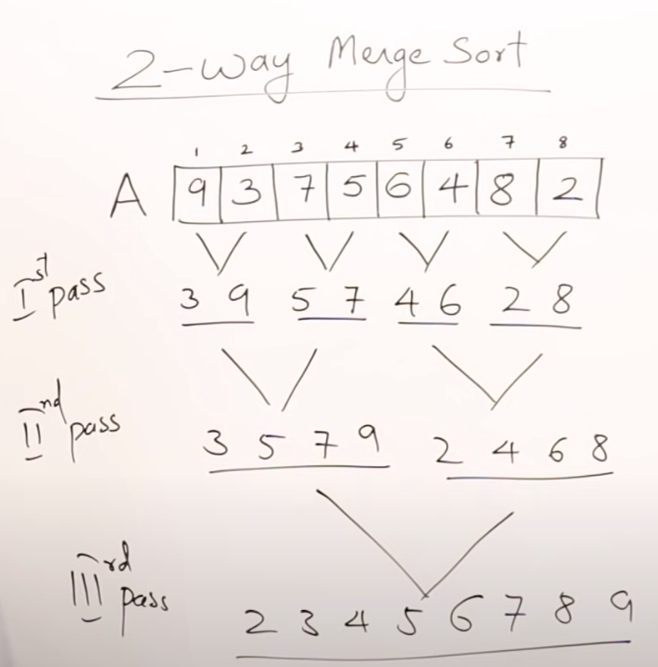

Contents
- Divide and Conquer
- General Problems which can be solved using this
- Recurrence Relation
- Binary Search
- Heap
- Merge Sort - General O(m+n) -> O(n)
- Quick Sort O(n log n) to O(n^2)
- Strassen's Matrix Multiplication
Divide and Conquer
https://www.youtube.com/watch?v=2Rr2tW9zvRg&list=PLDN4rrl48XKpZkf03iYFl-O29szjTrs_O&index=18
Problem of input size P, which has solution S If P is large, we can divide into smaller problems P1 P2 P3 .... We can get Solutions for sub problems and get S1 S2 S3
Combine all S1 S2 ... to get S using a METHOD.
Note: Every sub problem is similar to parent problem. If problem is sort, then sub problem is also sort.
HENCE - Recursive way to solve problem.
General Problems which can be solved using this
Binary Search Finding Max and Min MergeSort QuickSort Strassen's Matrix Multiplication
Recurrence Relation
Masters theorem decreasing function - https://www.youtube.com/watch?v=CyknhZbfMqc&list=PLDN4rrl48XKpZkf03iYFl-O29szjTrs_O&index=23
Here in recursive call, the next recursion in recursion, n-1 is given as input.
T(n) = T(n-1) + 1 --> Like a print function O(n) T(n) = T(n-1) + n --> Loop, increment is O(n+1) i++ or i-- --> O(n^2) T(n) = T(n-1) + log n --> Loop, increment is O(log n) i * 2 --> O(n log n) T(n) = 2 T(n-1) + 1 --> Recursion called twice within function --> O(2^n)
*Loop inside the recursion function
https://www.youtube.com/watch?v=MhT7XmxhaCE&list=PLDN4rrl48XKpZkf03iYFl-O29szjTrs_O&index=21 Notice: Overall O(n) is just multiply equation by n
T(n) = T(n-1) + 1 --> O(n) T(n) = T(n-1) + n --> O(n^2) T(n) = T(n-1) + log n --> O(n log n) T(n) = T(n-1) + n^2 --> O(n^3) T(n) = 2 T(n-1) + 1 --> O(2^n) T(n) = 3 T(n-1) + 1 --> O(3^n) T(n) = 2 T(n-1) + n --> O(n2^n)
Masters Theorem for Dividing Functions:
Here in the recursive call, next recursion in recursion, n/2 is passed as input. In Binary search uses n/2 since left OR right being processed.
T(n) = T(n/2) + 1 --> O(log n) - No loop within T(n) = T(n/2) + n --> O(n) - One loop within T(n) = 2 T(n/2) + n --> O(n log n) - Two recursion calls T(n) = 2 T(n/2) + n^2 --> O(n^2) - Two recursion calls T(n) = 4 T(n/2) + 1 --> O(n^2) T(n) = 4 T(n/2) + n --> O(n^2)
Final explanation - https://www.youtube.com/watch?v=OynWkEj0S-s&list=PLDN4rrl48XKpZkf03iYFl-O29szjTrs_O&index=27
When passing root n in the recursive call
T(n) = T(root of n) + 1 --> O(loglog base 2 n)
Binary Search
https://www.youtube.com/watch?v=C2apEw9pgtw&list=PLDN4rrl48XKpZkf03iYFl-O29szjTrs_O&index=30 https://www.youtube.com/watch?v=C2apEw9pgtw&list=PLDN4rrl48XKpZkf03iYFl-O29szjTrs_O&index=31 Assumed list is sorted Iterative approach O(1) to O(log n) -- If search item at middle, O(1) Recursive approach O(log n)
Heap
Heaps - Main file
Merge Sort - General O(m+n) -> O(n)
https://www.youtube.com/watch?v=6pV2IF0fgKY&list=PLDN4rrl48XKpZkf03iYFl-O29szjTrs_O&index=33 We have two sorted list. A and B. We make two index i and j We create third empty list. C. We make an index k for C. We compare first element in A with first element in B, the smaller of the two is put in C. We continue till all elements of A and B are compared, and C is full.
Size of A n and B is m. So O(m+n) which is O(n)
If we have multiple lists A B C D E F Watch --> https://youtu.be/6pV2IF0fgKY?list=PLDN4rrl48XKpZkf03iYFl-O29szjTrs_O&t=529
M-way merging - Merging M lists - We take M lists, compare all at once then merge. 2-way merging - Merging 2 lists - We take 2 lists at a time, merge them, then take next list.. so on 4-way merging - Merging 4 lists - We take 4 lists at a time, merge them, then take next three lists.. so on
NOTE THE DIFFERENCE: Merge Sort - This is recursive algo 2-way Merge Sort - This is iterative algo
2-way merge sort O(n log n)
https://youtu.be/6pV2IF0fgKY?list=PLDN4rrl48XKpZkf03iYFl-O29szjTrs_O&t=806  Also watch Optimal Merge Pattern, which two list selected to start with - https://www.youtube.com/watch?v=HHIc5JZyenI&list=PLDN4rrl48XKpZkf03iYFl-O29szjTrs_O&index=42
Image a single list. Assume each item in list is a list. Each item is not an actual list, its just a number. So if a list A has 8 items, so we think like we are sorting 8 lists. But since each item in the list is a number, its already sorted; its just a number.
Jargon - 1st pass, 2nd pass. See image example.
Merge sort Algo - This is divide and conquer O(n log n)
https://www.youtube.com/watch?v=mB5HXBb_HY8&list=PLDN4rrl48XKpZkf03iYFl-O29szjTrs_O&index=34
Break a list into smaller smaller, half half and perform comparison on last items.
Pros and Con
https://www.youtube.com/watch?v=ak-pz7tS5DE&list=PLDN4rrl48XKpZkf03iYFl-O29szjTrs_O&index=35
Pros Large size list Linked List - Only pointer can be changed without creating 3rd empty list External Sorting - Image two large files 10gb each. We can bring files in chunks. Stable - Duplicates arrangement is also maintained. In a list 2 duplicates, in final sort, 1st duplicate comes before 2nd duplicate.
Cons Extra Space (not in place sort) No small problem - if n<=15 then merge sort is better Recursive - O(n+log n) space where log n is stack space.
Quick Sort O(n log n) to O(n^2)
https://www.youtube.com/watch?v=7h1s2SojIRw&list=PLDN4rrl48XKpZkf03iYFl-O29szjTrs_O&index=36
Imagine a class and teacher asks children to stand in line height wise. Shortest guy knows he is shortest, goes in front, the tallest at back, and rest speak to each other and sort.
Idea is, each item looks who is infront and back, and stands. In list, an item only ensures that item on left is smaller and item on right is larger.
This is quick sort.
Jargon - Pivot, Partition
Pivot - The item in the list, from which we start our procedure. It could be 1st item or middle or random.
If Partition done on middle and pivot is 1st item then O(n log n) If list already sorted, partition in middle and pivot at 1st, worst case is O(n^2)
Improvement?
Always take the starting pivot as middle element Maybe one can take a random element as pivot.... but above is better.
Strassen's Matrix Multiplication
https://www.youtube.com/watch?v=0oJyNmEbS4w&list=PLDN4rrl48XKpZkf03iYFl-O29szjTrs_O&index=38
Time taken to multiply two matrix is O(n^3). Basically 3 loops are needed to multiply two matrix. That is why O(n^3)
Assumption that dimensions are in power of 2. 2x2, 4x4, 8x8..... If not in powers of 2, we can fill in 0 to make them in power of two.
Normal multiplication - O(n^3) Strassen's - O(n^2.81) - slightly faster
OPEN PROBLEM - A better way to multiply matrix is needed on earth.